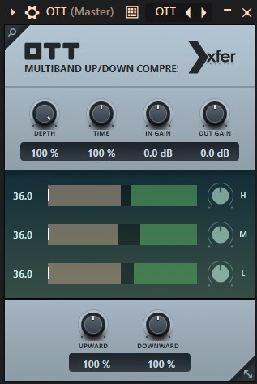

Кращі VST-плагіни 2026
| Назва | Тип | Ціна | Опис | Вигляд |
|---|---|---|---|---|
| Це синтезатор, який став стандартом індустрії. Він дозволяє створювати неймовірно чисті, агресивні та складні звуки. |  |
|||
| Мабуть, найпопулярніший еквалайзер у світі. Він поєднує в собі хірургічну точність та дуже зручний інтерфейс. | 
| Valhalla Vintage Verb — Один із найкращих ревербераторів для створення простору. |  |
|
| Універсальний дилей, який може звучати як вінтажна стрічка або сучасний цифровий ефект. |  |
|||
| Легендарний безкоштовний компресор для агресивного стиснення. Незамінний, щоб зробити звук максимально пробивним. |  |
|||
| Потужний сатуратор, що додає аналогового характеру, гармонік та "бруду" — ідеально для агресивних басів та кіків. |  |
|||
| Простий, але ефективний софт-кліппер. Допомагає контролювати піки без втрати енергії транзієнтів. |  |